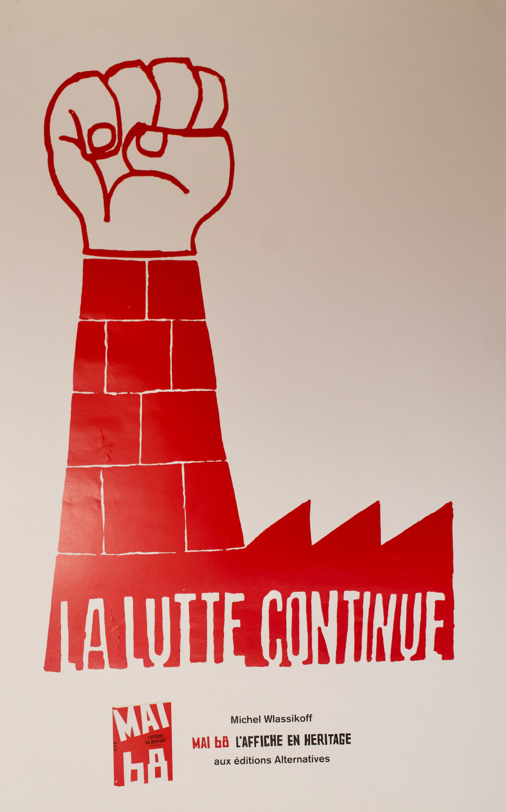
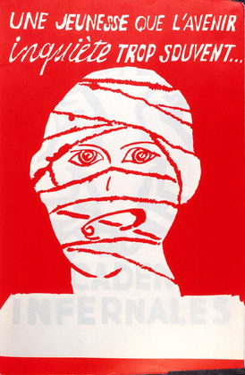
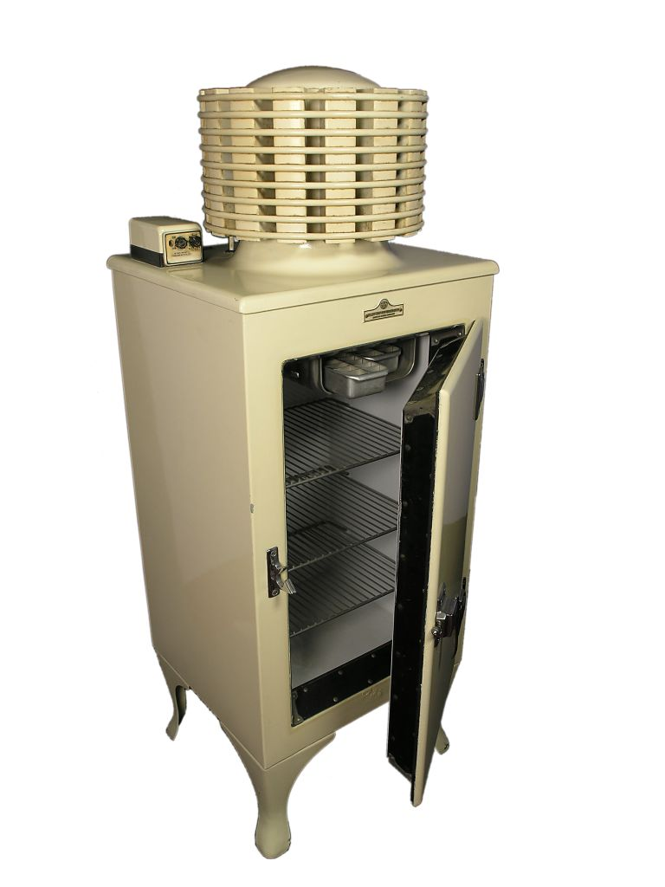

Les 30 Glorieuses, ou l’histoire de la surconsommation
Toujours besoin de plus ? FOMO (fear of missing out) ? Comment en sommes-nous arrivés à ce rythme effréné où les objets naissent, vivent et disparaissent presque aussi vite qu’ils sont produits ?
Avec Abundata, plongez dans les archives de l’INA, explorez des contenus exclusifs en collaboration avec Brut. Découvrez comment les choix d’hier influencent nos modes de vie d’aujourd’hui.
×

Machine & liberté
Imagine un monde sans machine à laver, sans frigo, sans aspirateur.
Avant le XXᵒ siècle, c'était la réalité pour la majorité des foyers. Puis, tout a changé.
L'avènement de l'industrialisation a transformé notre rapport au temps, au travail, et même à la liberté. Mais cette "liberté" offerte par les machines est-elle vraiment ce qu'elle semble ?
Voir plus
Avant le XXᵒ siècle, c'était la réalité pour la majorité des foyers. Puis, tout a changé.
L'avènement de l'industrialisation a transformé notre rapport au temps, au travail, et même à la liberté. Mais cette "liberté" offerte par les machines est-elle vraiment ce qu'elle semble ?
Voir plus

Consommation & l'information
Imaginez un monde sans internet, sans smartphones, sans réseaux sociaux.
📵 Avant les années 1990, c'était la norme. La presse papier régnait en maître, et les journaux télévisés structuraient nos soirées.
Puis, tout à basculé. Dans l'espace de trente ans, la révolution numérique a bouleversé nos habitudes d'information et de consommation de contenu. Mais à quel prix ?
📵 Avant les années 1990, c'était la norme. La presse papier régnait en maître, et les journaux télévisés structuraient nos soirées.
Puis, tout à basculé. Dans l'espace de trente ans, la révolution numérique a bouleversé nos habitudes d'information et de consommation de contenu. Mais à quel prix ?

Le gaspillage alimentaire
Imagine un monde sans supermarchés, sans plastique, sans emballages à tout-va.
Avant les années 1950, cette réalité semblait presque normale pour une grande partie de la population. Puis, tout a basculé.
L'explosion de la production alimentaire de masse a métamorphosé notre façon de consommer, d'acheter, et même de jeter.
Mais ce confort apparent, cette abondance qui semble nous simplifier la vie, est-elle vraiment aussi bénéfique qu'on voudrait nous le faire croire ? Le gaspillage alimentaire, symptôme d’une surconsommation excessive, nous montre une autre facette de ce progrès : celui qui nous fait perdre le sens de la valeur de ce que nous avons.
Avant les années 1950, cette réalité semblait presque normale pour une grande partie de la population. Puis, tout a basculé.
L'explosion de la production alimentaire de masse a métamorphosé notre façon de consommer, d'acheter, et même de jeter.
Mais ce confort apparent, cette abondance qui semble nous simplifier la vie, est-elle vraiment aussi bénéfique qu'on voudrait nous le faire croire ? Le gaspillage alimentaire, symptôme d’une surconsommation excessive, nous montre une autre facette de ce progrès : celui qui nous fait perdre le sens de la valeur de ce que nous avons.

Le rasoir
Imagine un monde sans rasoirs jetables, sans lames interchangeables, sans le confort des produits modernes.
Avant le XXᵒ siècle, les hommes se rasaient avec des couteaux ou des rasoirs droit, nécessitant une dextérité et un entretien constants. Puis, tout a changé. L'industrialisation des produits de soin a apporté des solutions pratiques, rapides et accessibles à tous.
Mais cette facilité, ce luxe d’un rasage parfait à chaque instant, n’a-t-elle pas un prix ? Un prix caché dans l'usage excessif, la pollution des déchets plastiques et l'illusion de la perfection constante.
Avant le XXᵒ siècle, les hommes se rasaient avec des couteaux ou des rasoirs droit, nécessitant une dextérité et un entretien constants. Puis, tout a changé. L'industrialisation des produits de soin a apporté des solutions pratiques, rapides et accessibles à tous.
Mais cette facilité, ce luxe d’un rasage parfait à chaque instant, n’a-t-elle pas un prix ? Un prix caché dans l'usage excessif, la pollution des déchets plastiques et l'illusion de la perfection constante.
Machine & Liberté
Name Slider
Description
Name Slider
Description
Name Slider
Description